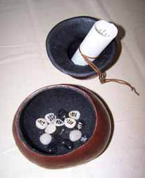
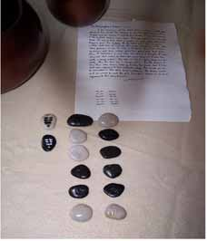
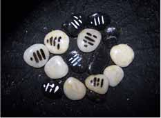

In a recent issue of Dream Network Journal (Vol. 26 #3 and #4), Russell Lockhart, in his column “Dreams in the News,” described a dream that pictured him making a “dreamgourd” and specially marked stones to be used in casting I Ching hexagrams in relation to dreams. His fellow columnist in these pages, Paco Mitchell, responded to his article in an email and this has led to an on-going dialogue between these two old friends. They felt their exchange might be of interest to readers of Dream Network Journal
Paco Mitchell: I just re-read your article for the fifth or sixth time. A couple of associations came to me, the result of recently having read a book by Brian Swimme and Thomas Berry called The Universe Story. The book tells the story of the universe, from the original fireball (which they call the “flaring forth”) to the present day. Why should this book have stimulated any associations to your I Ching gourd dream? Bear with me. They discuss the slow development of the Lower and Upper Paleolithic culture, followed by the relatively rapid inventions of the Neolithic period. They pointed out that Neolithic villages have provided a pattern for human survival and development for many thousands of years, enduring throughout the period of ancient and classical civilizations, persisting even into modern times. It is only recently that technological incursions have penetrated the deepest reaches of the furthest outposts, threatening the last remnants of Neolithic culture. What especially impressed me was the author’s insistence on the model of the self-sustaining Neolithic village as a viable alternative for human survival during the post-technozoic future—if there is to be any future for us. Their emphasis was on an appropriately ecological scale of human presence within, and as members of, what they call the “Earth Community.” But another aspect of appropriateness was the bedrock recognition that humans participate in and depend on cosmic forces to which we are all subject. As one example of this recognition, they cited the “throwing of bones” as characteristic of that original, primordial and natural religious attitude. Once the bones leave the human hand, they become subject to the laws and patterns governing the universe, with all the invisible interconnections of chance and necessity pertaining thereto.

Russell Lockhart: I can certainly attest to the numinous quality of the dream, filled as it was with that quality of something other, as well as originating in some other geography than my usual consciousness. And having made the dreamgourd, and now using it in my practice with dreams, I can say that its very existence calls forth a palpable religious dimension. But what, more specifically, was your association?
PM: Simply, that your dreamgourd and the “new” oracular technique that went with it—insofar as they were both original, spontaneous products of the dreamworld, rather than products of your conscious recall, intention, or cryptomnesia—point back to and simultaneously draw upon the most ancient, primordial sources of human creativity. This is to suggest, according to my intuition, that the creative activity of humans, from the earliest Paleolithic, through the Neolithic, all the way to the present and into the foreseeable future, comes about in large measure as a result of dreaming. Your dream with its gourd, stones and oracular technique, participates in that amazing, panoramic tradition, and even as it points to the past, it also points to the future.

RL: Part of the numinous quality of the dream for me was in the experience of this enduring stream of human history, not so much as something long ago and long forgotten and perhaps remembered only when archaeologists and anthropologists unearth bones, open hidden caves, and expose artifacts of these early cultures; but, as a living reality in the depths of the psyche of a person alive today in this world. And I mean this not as an idea or concept, but as an experience of that reality. Some dreams are able to “go there” and “bring to us” an awareness of this “past” which, as you say, points to the future. What was your second association?

PM: The second association comes from your cave-fingertips-fire dream. I recently re-visited your web page, [see http://www.ralockhart.com for the dream and image] and later, when I read about the gourd dream, I immediately associated it with the fire dream and with the above reflections. They seemed to belong together.
RL: I did not immediately associate the two dreams. But when I worked on the etymology of the first hexagram I cast in using the dreamgourd, I realized two things: The first was that the cave that I was in in the dream you refer to, was gourd shaped; Second, that the strange feelings in my fingers as I was making the dreamgourd were echoes of the feeling in the cave dream when I touched the walls of the cave and could feel the markings there that turned out to be an unknown language. Both dreams had that amazing sense of “task” about them to which there was no saying no. In that dream, the “fire” that came from my fingertips enabled me to see.
PM: Swimme and Berry make the point that “the controlled use of fire is the first extensive control of the human over a powerful natural force with almost unlimited possibilities that would be associated with human development over the centuries. Together with the shaping of wooden and stone implements, fire becomes the primordial humanly controlled technology.”
RL: I can tell you that the “awe” I experienced in that dream when I rubbed my fingertips together, “remembering” I could make fire that way, must have been something like those early experiences of humans beginning to control fire. In many ways it is the origin of what we mean by technology. So much is hidden in this word we no longer hear, but probably need to, because it gets to the roots of what these early experiences were and which we can once again have access to. That sense of techné as “art,” as “weaving,” as “text” and in the earliest sense, as “becoming.” One might say that when humans learned the art of fire, they became human. The sad thing is that we have lost so much of the sense of this; what is hopeful though, is that these “root” experiences are still available to us, and most especially through dreaming.
PM: We can see that the intelligence behind Paleolithic and Neolithic oracular practices was refined during the early centuries of Chinese civilization into the magnificent edifice of the I Ching. That intelligence, that “art.” still percolates in the modern psyche—in your dream—possibly showing us ways out of our current impasse—ghastly as it is. I know that’s a lot to expect of a dreamgourd with stones in it, something so simple, so primitive, so... spooky. But it seems to me that further degrees of technical prowess are not really what we need, so much as a re-connection to something more basic in our being.
RL: Too often, I think, this yearning gets pictured as a romantic “return to the past,” when I do not believe that is the impulse at all in something like the dreamgourd. No, it is more like recovering something we have lost because we will need it to find our way into a sustainable future. I believe this happens one person at a time, and that the telling of these experiences to one another is the Eros that can “spark” a fire in the psyche from one to another. With the possibility of everyone in the world being connected via the Internet, such a “global village” of shared experience of these lost things is becoming more and more possible. The terrible fragmentations and polarities loose in the world now are presaging a momentous enantiodromia, a reversal, that I believe will form the basis of the new paradigm of consciousness that the recovery of our lost soul (which is what dreams are) will make possible. All the old calendrical systems, including the I Ching (which is also a calendar), as well as the science of creative epochs, all point to 2012, as a time point of this “end” of what we now experience as human consciousness. So, no Paco, I think you are right, that something like the dreamgourd dream is the very “stuff” of re-connection, the fabric of it, the weaving of it, the art of it, the technology of it. The eventual “discovery”— or actually, rediscovery—of dreams (which has only just begun) will be as monumental for our fate as the discovery of fire was in the early days of our becoming human.
PM: Well, this fits with something else that Thomas Berry brings out in his book, Dreams of the Earth. He says that in coming to terms with the planetary crisis we need to create a new cultural coding which we can do only by reaching far into the past, beyond the old cultural codes which have brought us to the brink of devastation. We must, he says, make contact with our genetic coding and, out of that, bring forth a new vision of how to live on the earth. In my opinion, dreams such as yours, which reveal “the answers,” are trying to pull us back to Berry’s genetic coding, to the very source of those creative “spontaneities” as he calls them, which alone can bring us back into alignment with the evolutionary development of the universe.
RL: It seems to me a new angle on what Jung was saying in his letter to Herbert Read: “We have simply got to listen to what the psyche spontaneously says to us. What the dream, which is not manufactured by us, says is just so.” The dream would be one way in which the “new code” would come to us. And... note what else Jung says here: “it is the great dream which has always spoken through the artist as mouthpiece. All his love and passion (his “values”) flow towards the coming guest to proclaim his arrival.” In this sense, the coming guest would be the “new code” Berry is trying to get us to see the urgency of. Imagine what might happen if dreams were welcomed in this spirit! Maybe not today, but someday, it will happen.
PM: Knowledge of the answers, in other words, lies “sealed” within the human, the only barrier between us and that knowledge is the boundary between consciousness and the dream. As you know, in spite of our general resistance to dreams (our cultural coding), that boundary is easily breached, like the wad of clay with which the Egyptians sealed their tombs to determine if the tomb had been violated or not. I also note the Celtic tradition of the “silkie,” a creature part man, part seal, capable of shuttling between the human world of cultural codes and the larger, animal- cosmic world of genetic codes (via dreams or visions). I remember your telling me a dream in which you encountered a seal which told you “the answers,” but which upon waking you could not remember. And then the following night, in the dark, walking along the beach, you tripped over a washed up dead seal, and you sat down with it and tried to remember.
RL: Essentially everything I’ve done since that dream and that encounter with the seal has been trying to remember what I was told and to bring it forth.
PM: I think of silkies as symbolizing the daemon of what Berry calls the “shamanic personality,” which he says is exactly what we need if we are to bridge the chasm between where we are and where we need to be. In this sense, I regard dreams such as yours as “shamanic.”
RL: That is easily taken the wrong way, of course. I think the way I can agree with you is to say that we do not need to seek a shaman in someone else, but the shamanic potential in each of us.
PM: Far from being an occasion for ego-inflation, the shamanic potential— when lived—actually brings a sense of responsibility. That’s how you’ve responded to your dreams— ever since I’ve known you, actually. It’s not about flying off on a broomstick. When you say—“the shamanic potential in each of us”—you bring it back down to earth. By the way, your image of dreams being “rediscovered” on a wide scale, is intriguing. I hope you’ll say more about that.
RL: Yes, that would be a good place for us to begin in the next issue.